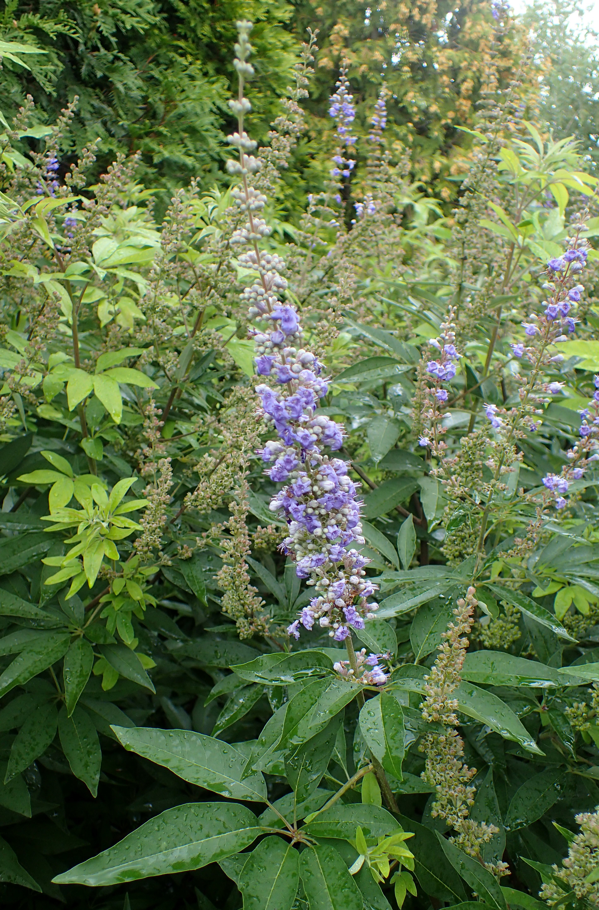

Vitex agnus-castus
| common name | vitex, chastetree | |
| en español | sauzgatillo | |
| plant family | Lamiaceae (mint) | |
| parts used | fresh and dried fruit |
 from Wikimedia Commons by Krzysztof Ziarnek, Kenraiz - Eigenes Werk, CC BY-SA 4.0
observations/description
dried fruit
- small, pearly seeds, a bit like black lentils but more dark brown than black
- pungent, mustardy aroma, also reminds me of capers
"Vitex agnus-castus", Wikipedia
- delicately textured, aromatic foliage and butterfly-attracting midsummer spikes of lavender flowers opening in late summer in cooler climates
- grows to a height of 1–5 meters
distribution/conservation status
"Vitex agnus-castus", Wikipedia
- native of the Mediterranean region
- one of the few temperate-zone species of Vitex, which is on the whole a genus of tropical and subtropical flowering plants
- cultivated in warm, temperate regions of the world
primary actions
Spiritual Herbalism, p. 108-9
- sexual amphoteric (aphrodisiac or anaphrodisiac), glandular tonic, hormone balancer/regulator, fertility enhancer, galactagogue
The Modern Herbal Dispensatory, p. 210
- hormonal balancing, anaphrodisiac
The New Age Herbalist, p. 124-5
- anaphrodisiac, galactagogue, reproductive tonic
system affinities
reproductive, endocrine
primary uses
Spiritual Herbalism, p. 108-9
- sexual amphoteric: can increase or decrease libido
- regulates estrogen and progesterone, adjusting the body to its own natural rhythm
- indicated for estrogen-dominant people who bleed too frequently, i.e., during mid-cycle
- promotes fertility when infertility is related to low progesterone
- supportive when coming off of birth control
- supports the corpus luteum (around the egg)
- affinity for the second half of the cycle
- indicated for PMS and any of its symptoms
- moodiness, weight gain, nausea, headaches
- galactagogue: use for first 10 days then stop when milk comes in
- indicated for fibrocystic breasts, uterine fibroids, and endometriosis
- supportive throughout all stages of life
- supports teenage acne and good for people just starting their periods
- supports menopause
- works slowly and needs to be used for 3-4 months
- tincture may be more effective than decoction
The New Age Herbalist, p. 124-5
- used for disorders of the female reproductive system since classical times
- increases production of the luteinizing hormone and prolactin
- stimulates the flow of milk
- can regulate periods where there is excessive bleeding or too frequent menstruation where there is prolonged or excessive bleeding
- appears to simulate synthesis of progesterone and regulates production of estrogen
- supports both PMS and menopause
- used to treat fibroids, inflammation of the womb lining, and to reestablish normal ovulation and menstruation after coming off birth control
The Modern Herbal Dispensatory, p. 210
- helps to regulate female hormones, making it useful for PMS and menopause
- good remedy to balance reproductive hormones in teenagers and adults
- generally a better remedy for women than men because it inhibits androgens
- may take 3-6 months to see results
energetics
Spiritual Herbalism, p. 108-9
- bitter, acrid, warm
The Modern Herbal Dispensatory, p. 210
- warming, drying
pharmacology
Spiritual Herbalism, p. 108-9
- volatile oils, bitter principle, alkaloids, glycosides, flavonoids, iridoids
- iridoids are hormone balancing
The New Age Herbalist, p. 124-5
- volatile oil, glycosides, flavonoids, bitter principle (castine), possible alkaloids
contraindications/pharmaceutical interactions/warnings
Spiritual Herbalism, p. 108-9
- overproduction of progesterone, deficiency of estrogen
- do not use while pregnant or when breastfeeding
- do not use while on birth control or during hormone replacement therapy
- do not use with prepubescent children
- contraindicated for medications that bind to dopamine receptors (e.g., Prozac and other antidepressants)
- not for use while bleeding
The Modern Herbal Dispensatory, p. 210
- might reduce the effectiveness of hormonal birth control
preparations
The Modern Herbal Dispensatory, p. 210
- tincture
- dried berries, 1:5, 45% alcohol
- powder
Herbal Materia Medica, p. 38
- infusion
- ground berries, 0.5-1 tsp in tea
- tincture
- (dried) seeds, 1:5, 65% alcohol
The Herbal Medicine-Maker's Handbook, p. 156, 192
- tincture
- dried berries, 1:4 to 1:5, 45-65% alcohol
- glycerite
- dried berries, 1:4 to 1:5, 60% alcohol
dosage
The Modern Herbal Dispensatory, p. 210
- tincture: 1-3 mL, 3/day
- powder: 1000-2000 mg, 3/day
Herbal Materia Medica, p. 38
- infusion: 1/day in morning
- tincture: 30-60 drops, 1/day in morning
The Herbal Medicine-Maker's Handbook, p. 156, 187
- tincture: 1-2 mL, 3/day
- glycerite: 10-25 drops, 3-4/day
extra information
"Vitex", Wikipedia
- entire genus Vitex was moved from the Verbenaceae family to the Lamiaceae in the 1990s after genetic sequencing
Spiritual Herbalism, p. 108-9
- used as a reproductive tonic since the middle ages
- berries reportedly reduce libido in men, hence the names 'chastetree' and 'monk's pepper'
- virgins carried it as a symbol of their virginity in Greece and Rome
personal experiences/simples
decoction (8 g: 12 oz, 20 minutes), dried berries
- lightly processed herb in the mortar and pestle before cooking
- aroma expanded, still mustardy/capery but also a bit Asteraceae-y, like marigolds or diasies
- aroma transfigured even more as it cooks, highly pungent and floral, very complex, more Lamiaceae, reminds me of eau de vie, parsley, sage
- very dark brown color, like coffee; also like some coffees, a slight oily film on the surface
- sweet and fruity/floral at first, then very bitter, leading to a long slightly bitter aftertaste, very slightly acrid
- lingering pepperiness in the back of the throat, lingering floral taste in the front of the mouth
- very sobering, can definitely see this being used (per Karen Rose) to re-evaluate one's relationship to power and perhaps redirect power towards mastery of the self rather than others
witchcraft
Spiritual Herbalism, p. 108-9
- graceful teacher who brings harmony to the body and spirit
- instructs in the acceptance of feminine energy and sexuality
- centers our vital energy and teaches us how to moderate sexual energy
- when to hold on and when to release
- shows us how to own our power as we transition through all life stages
- explores the nature of the word 'virgin' as autonomy over the self and our sexual power, not needing another to be self-sufficient
- evokes Ishtar, who was considered chaste despite her sex work
- planetary influences: mars, water
recipes
sources
Easely, Thomas and Steven Horne. The Modern Herbal Dispensatory (2016)
Goldberg Blackthorn, Samantha. Ace of Cups Herbal Medicine and Botanical Magic Herbal School (2024)
Green, James. The Herbal Medicine-Maker's Handbook: A Home Manual (2000)
Mabey, Richard et al. The New Age Herbalist (1988)
Moore, Michael. Herbal Materia Medica, Fifth Edition (1995)
Rose, Karen M. The Art & Practice of Spiritual Herbalism (2022)
"Vitex" on Wikipedia. Retrieved 16 April 2025.
"Vitex agnus-castus" on Wikipedia. Retrieved 8 May 2025.